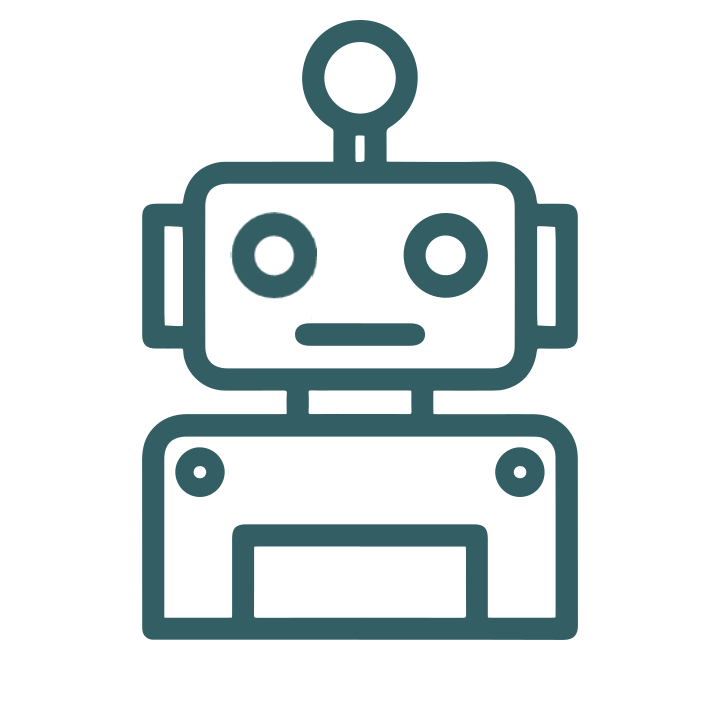

Курс: Lego – Инженерия
Возраст: от 10 лет
Требования: изучение Scratch для младших детей, программирование на СИ – для более старших
Описание:
Все дети любят Lego, ведь это очень замечательная и занимательная игрушка для детей самых разных возрастов. Платформа EV3 от Lego – великолепный инструмент творческого и технического развития любого ребенка. Данный высокотехнологичный конструктор содержит сотни частей, соединений и креплений, с помощью которых можно создавать умопомрачительные конструкции. Также в наборе идут самые разнообразные датчики, различные моторы и колеса, а также программируемый блок управления! С помощью EV3 слушатели курса научатся создавать сложные «умные» механизмы: автоматический сортирующий конвейер, автоматическая сигнализация, часы с дополнительными функциями и много другое. Особенно интересно проходит сборка роботов самых различных форматов и предназначений, которые также могут участвовать в соревнованиях! Робота можно программировать с помощью простой системы блоков – поэтому, начинающим инженерам не обязательно писать код. Однако, при желании, компьютером EV3 можно управлять на языке Python при наличии знаний программирования хотя бы на базовом уровне. Навыки и опыт, полученные в рамках изучения данного курса, обязательно пригодятся в любой сфере IT, особенно – в разработке сложных алгоритмов, а также в продвинутой робототехнике.
